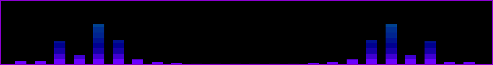

Zdravíčko
Chtěl jsi někdy přehrát hudbu, aniž bys měl jen trapnu mp3 nebo modul? Pokud ano, možná to i půjde.
Co je .nm soubor
Notemap soubory jsou jednoduchý zápis pro noty.
# komentář 5|--a--a--a--a--a--a--a--a--| 5|--d--d--d--d--d--d--d--d--| 5|--F--F--F--F--F--F--F--F--| 4|d-----d-----d-----d-------| 3|---------------------a--b-| 5|a--a--a--a--a--a--a--a--a-| 5|d--d--d--d--d--d--d--d--d-| 5|F--F--F--F--F--F--F--F--F-| 4|----------------------d---| 3|----b-----b-----a--b------|
V jednoduchosti:
- Číslo udává oktávů
- Pajpa vyrváří scope not
- Uvnitř scopu platí:
- '-' je prázdná doba
- Malé písmeno je odpovídající nota
- Velké písmeno je odpovídající ostrá nota (#)
Tento formát pionýroval Daxanius, který stojí za Zing projektem, ale o tom níže.
Kde je sehnat
Fenomenálním zdrojem je pianoletternotes jsou tam auto re-formátované midi soubobory, a tak tam najdete mnoho skladeb. Pokud budete chtít přehrávat soubory s této stránky, bude potřeba odstranit "LH:" a "RH:", které říkají jakou rukou máte sekvenci hrát.
Jak se používá
Zápis se čte z leva do prava. Pokud je více řádků vedle sebe, tak se čtou najednou.
#!/bin/bash
link="$1"
filename="$2"
if [ "$link" == "" ]; then
echo "you have to specify link"
exit 1
fi
# curl "$link" > "tst.html"
# f=$(cat "tst.html")
f="$(curl -s "$link")"
err=$?
if [ "$err" != "0" ]; then
echo "curl error: $err"
exit 1
fi
# find title
if [ "$filename" == "" ]; then
title=$(echo "$f" | grep "headline")
tmp=${title#*headline\"\:\ \"}
filename=${tmp%"\",\"description"*}
if [ "$filename" == "" ]; then
filename=out.nm
echo "confused - defaulting to: $filename"
else
filename="$filename.nm"
echo "output file name not specified - guessing: $filename"
fi
fi
echo "link: $link"
echo "filename: $filename"
if [ -f "$filename" ]; then
# echo "output file exists - press enter to continue (overwrite) or ctrl+C to terminate"
# read
echo "output file exists - overwrite"
fi
# start writing file
echo "# link: $link" > "$filename"
echo "# date: $(date)" >> "$filename"
echo "# note: done via script (nm-from-link.sh) play with zing" >> "$filename"
echo "# zing: https://github.com/Daxanius/zing" >> "$filename"
# find notes
duration=0
chords_per_note=0
tmp=${f#*""}
notes=${tmp%""*}
IFS=$'\n'
for i in $notes; do
# blank
if [ "$i" == "
" ]; then
echo "" >> "$filename"
duration="$(( duration + 1 ))"
continue
fi
# note set
# RH:6|--------------A-----------|
if [[ "$i" == *"Octave"* ]]; then
tmp=${i#*\"\>}
note=${tmp%"
"*}
# replace ${parameter//pattern/string} mainly for badapple
note=${note//"—"/"-"}
note=${note//"—"/"-"}
if [ "$chords_per_note" == 0 ]; then
chords_per_note="$(( $(echo "$note" | wc -m) - 3 ))"
fi
echo "$note" >> "$filename"
continue
fi
done
duration="$(( duration * chords_per_note ))"
echo "# multiply this number by --chord-duration (ms)" >> "$filename"
echo "# divide by 1000 - will give you rough playtime in seconds" >> "$filename"
echo "# time: $duration" >> "$filename"
exit 0
Jak je přehrát
Nečekaně takto obskurní formát má podporu v podstatě jen u jednoho projektu, ale jeho jednoduchost umožňuje ho implementovat vzkutku jednodušše. V podstatě vám stačí základní chápání zvuku, nepotřebujete nic jiného než knihovnu na přehrání vzorku zvuku.
Zing
Zing je rust projekt pro přehrávání .nm souborů na linuxu přes bzučák na motherboardu. Tento projekt byl první, který přišel s konceptem přehrávání .nm souborů.
Protože potřebuje konkrétní hardware, tak není ideální pro běžné použití. Navíc se tento program skáldá ze dvou částí: cli a daemon. Toto rozdělení je potřeba, protože přímá interakce s bzučátkem vyžaduje root access.
Rezing
Rezing je cli/tui nástroj pro přehrávání .nm souborů z reproduktorů. Namísto bzučáku využívá libao a je implementován v C++.
Tzing
Tzing je tui front-end pro Rezing.
Bonusem je možnost načítání ascii alba a zobrazení komentáře v podporovaných souborech.
Ardzing
Bzučák připojený na output arduina může fungovat podobně jako Zing. Také lze použít sériák pro posílání dat z počítače.
Návrhy a připomínky
Pokuď zde nenajdete to co potřebujete, nebo byste zde rádi vyděli něco dalšího, tak můžete použít tento formulář pro zpětnou vazbu.